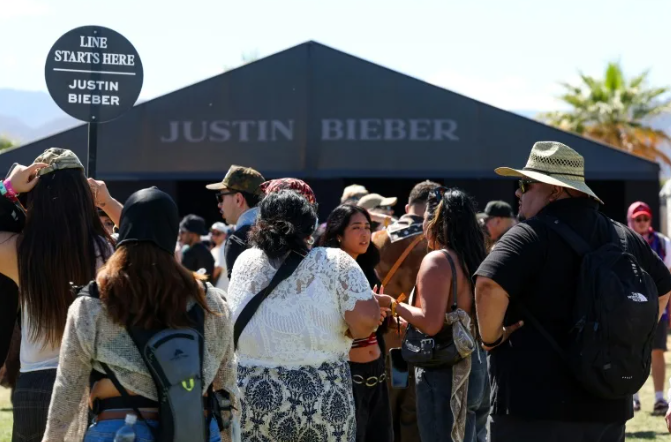

Justin Bieber se reencuentra con su público en Coachella
Este sábado, el cantante invitó a la tarima a los músicos Tems, Dijon, Wizkid y el productor y guitarrista Mk.gee, y también entonó éxitos como "Sorry", "Stay", "Where Are U now", y "Daisies", con la cual se despidió de la audiencia.
Paula RAMON

Con un set minimalista y un viaje a su pasado musical, el astro del pop Justin Bieber regresó oficialmente al escenario este sábado, cuando encabezó el segundo día de Coachella.
El cantante, vestido de suéter rojo, bermudas y botas negras, estableció de inmediato una conexión con su público en la arena, pero también con quienes estaban viéndolo en casa gracias a la transmisión en vivo de YouTube.